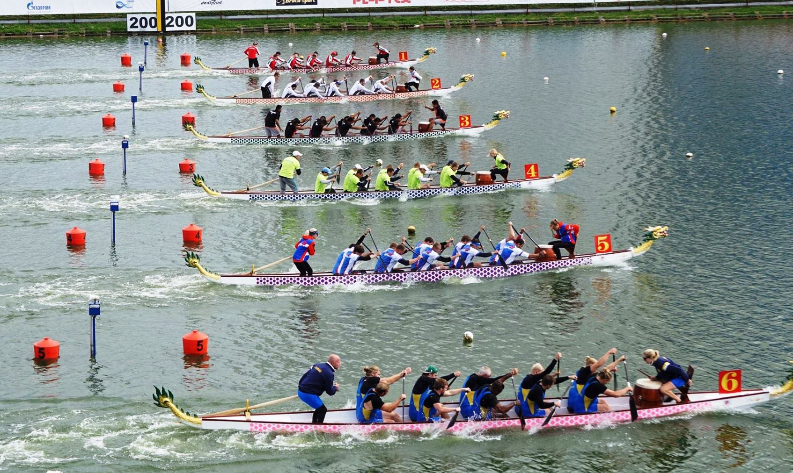

Sárkányhajózás

Az Európai Sárkányhajó Szövetség a következőkben szabályozza a hajó és a lapát formáját és méreteit.
A hajótest 12,49 méter, a sárkányfejjel és farokkal együtt 13,5 méter hosszú, szélessége 1,15 méter, súlya 250 kg lehet.
A lapát hosszának 105 és 130 cm között kell lennie, a toll szélessége 18 cm és szimmetrikus mindkét oldala, amelyben kanál nem lehet. Európában is a hongkongi szabvány az elfogadott, amely lefelé szélesedő tollú kenu lapát. A versenyeken 18-20 lapátos két oldalt, egy dobos adta ütemre és egy kormányos irányításával hajtja előre a hajót. A dobos háttal a menetiránynak ülve elől foglal helyet, a kormányos pedig hátul a hajó farában áll és a rögzített kormánylapáttal kormányoz.Története
A sárkányhajózás sportja Dél-Kínából származik. Több mint 2000 éves története Csü Jüan legendájához kapcsolódik. Innen ered a hagyomány és Kínában azóta is minden évben - az ötödik holdhónap 5. napján - megtartják a sárkányhajó ünnepet, amely nemcsak vízi versenyt, de hatalmas ünnepséget, színpompás felvonulást is jelent.
Nemzetközi versenyek
Egy-egy ázsiai vagy óceániai sárkányhajó fesztiválon több száz hajó küzd egymással és több ezren szurkolnak nekik. Európában csak az 1980-as évek végén kezdett ismertté válni a sportág. Az elsõ sárkányhajótestek a hongkongi és szingapúri utazási irodákon keresztül érkeztek Európába.
mutattak be elõször ilyen hajót Duisburgban és 1987-ben a kajak-kenu VB kísérõ programjaként szerepelt bemutató versenyként. A következõ jelentõs állomás volt 1989, amikor a hamburgi kikötõ születésének 800. évfordulóján szerepelt a sárkányhajózás az ünnepi programban.
1990-ben megalakult az Európai Sárkányhajó Szövetség, amely 1992-ben a belgiumi Hazewinkelben rendezte meg az elsõ európai klubcsapatok közötti Sárkányhajó VB-t, majd ezt követõen minden évben (Schwerin, Berlin, Nottingham, Silkeborg, Duisburg) megtartották 1997-ig.
1996-ban Silkeborgban párhuzamosan az európai klubcsapat EB-vel lezajlott az elsõ, majd 1997-ben Duisburgban a II., 1998-ban Rómában a III. nemzetek közötti Sárkányhajó EB is. 1998-tól páros években nemzetek között, páratlan években a klubok között tartanak EB-t.
Az elsõ Sárkányhajó VB-t Kínában rendezték 1995-ben, a másodikat 1997-ben Hongkongban, a harmadikat pedig 1999-ben Nottinghamben. 2010-ben klubvilágbajnokságot rendezett az ICF (International Canoe Federation) Szegeden, 2013-ban pedig az IDBF (International Dragon Boat Federation) válogatott VB-t. 2009-ben Budapesten az EDBF (European Dragon Boat Federation) rendezte meg a klub EB-t, illetve az ECF (European Canoe Federation) 2017-ben fog klub- és válogatott EB-t rendezni Szegeden. 2018-ban az IDBF fogja a Matyi-éri olimpiai központba megrendezni a klub világbajnokságát.
Magyarországi elterjedése
kezdődött a német PG Mannheim kajak-kenu klubbal való kapcsolat révén. Ebben a csapatban mint idegenlégiós helyet kapott néhány magyar (győri és paksi) kajakos-kenus. Az első hazai klubok az 1997. februárjában alakult Győri és Rába Sárkányhajó Klubok voltak.
Ennek a két klubnak a tagjaiból állt össze az a magyar csapat, ami 1997-ben a Duisburgi II. Sárkányhajó Európa-bajnokságon szerepelt. A csapat a férfi legénység révén egy II. és egy IV., míg a vegyes egység két III. helyezést szerzett. (Ezeket a helyezéseket versenyen kívül érték el, mert még nem voltak tagjai az Európai Sárkányhajó Szövetségnek.)
A következő évben kaptak egy használt sárkányhajót Németországból, és ekkor megalakult a Magyar Sárkányhajó Szövetség, amit fel is vettek az Európai Sárkányhajó Szövetségbe (EDBF). Az I. Magyar Sárkányhajó Bajnokságot 2003. szeptember 13-án szervezte a szövetség.
{https://www.sarkanyhajozas.hu}